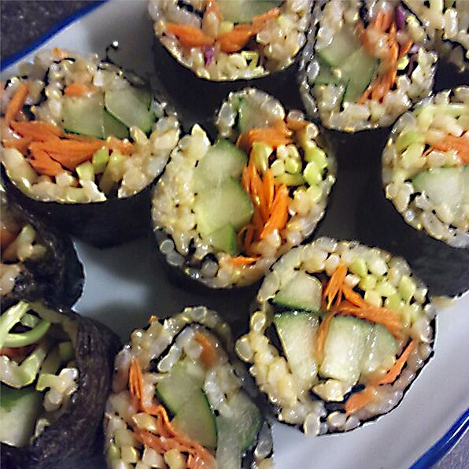

Quick Vegan Sushi

Description
Make-at-home sushi that is quick, easy, and vegan. Serve with wasabi and soy sauce.
Ingredients
- 1 (7.4 ounce) package precooked brown rice
- 2 sheets nori (dry seaweed)
- 1 bamboo mat
- 1 cucumber, sliced into thin strips
- 1 carrot, sliced into thin strips
Steps
- Place cooked rice in a microwave-safe bowl and cover partially. Microwave on high until hot, about 1 minute.
- Place 1 nori sheet on the bamboo mat. Spread 1/2 of the rice evenly on nori sheet, using a little water on your hands or a spoon to keep rice from sticking. Place 1/2 of the cucumber and carrot slices on the top half of the rice, and roll nori sheet around rice and veggies, using the bamboo mat to help. Repeat with remaining nori sheet, rice, and veggies.
- Cut each roll into 6 small pieces and put them in the refrigerator until cool, about 20 minutes.